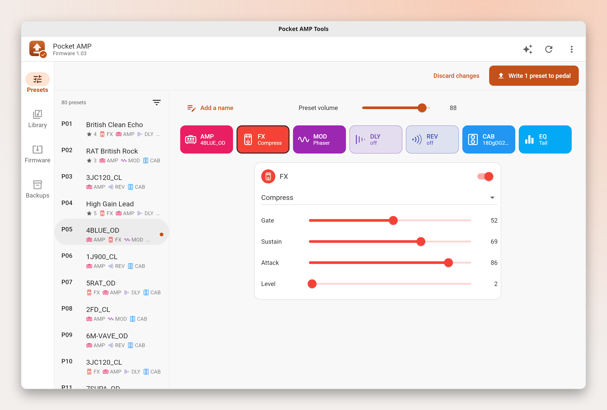

Para todo Pocket AMP · gratuito e de código aberto
Edite e atualize o seu Pocket AMP, seja qual for a marca
O Pocket AMP Tools edita os 80 presets ao vivo no pedal, carrega os seus IRs e capturas de amplificador, guarda backups e instala o firmware oficial (hoje a V1.05) por um cabo USB comum, sem drivers.
Windows 10/11 · macOS 11+ · Linux x64 (AppImage) · Android 8+ (APK). O app está em inglês. Ferramenta da comunidade, sem vínculo com nenhuma marca do pedal.
Vendido como M-VAVE Pocket AMP, Donner Pocket AMP, Coolmusic PIXIE1 e New Bee SK17: um pedal só, um app só.

O que ele faz
Editor de presets, ouvido ao vivo
Volume, cadeia de sinal, modelo e knobs de cada bloco, e o EQ. Cada mudança toca no pedal na hora, e nada é gravado até você mandar gravar.
Seus IRs e capturas de amplificador
A biblioteca envia impulse responses em WAV para os 20 slots de CAB e capturas
.namA2 para os 20 slots de AMP, e lembra qual arquivo está onde.Nomes, notas e filtros
Dê a cada preset um nome, uma descrição, etiquetas e estrelas, e filtre a lista. Há atalhos de teclado para o editor inteiro.
Backups que dá para ler
Um backup é um arquivo JSON simples, com cada knob pelo nome, e leva junto o nome, as etiquetas e a nota de cada preset. Um é feito antes de cada atualização de firmware.
Atualização de firmware com rede de segurança
O arquivo oficial da M-VAVE, conferido antes de ser enviado, com os seus presets guardados antes e restaurados depois.
No celular, por Bluetooth
No Android e no Linux o editor também funciona por Bluetooth. Atualizar o firmware exige o cabo.
Um assistente, se você quiser
Descreva um som e um serviço de IA que você escolhe, com a sua própria chave, edita o preset para você. Fica desligado até você configurar.

Quais pedais
| Vendido como | Situação |
|---|---|
| M-VAVE Pocket AMP | O pedal em que o app foi desenvolvido. |
| Donner Pocket AMP | Atualizado para a V1.05 por um dono, presets mantidos. |
| Coolmusic PIXIE1 | Atualizado para a V1.05 por um dono. |
| New Bee SK17 | Atualizado para a V1.05 por um dono. |
| Outro nome | Presets, backups e biblioteca, se ele guardar os presets como um Pocket AMP; atualização de firmware depois que um dono relatar o modelo. |
Como atualizar o firmware
- Carregue o pedal, conecte com um cabo USB de dados e ligue.
- Feche o app da M-VAVE e tudo o mais que use MIDI.
- Abra o Pocket AMP Tools. Ele detecta o pedal e mostra a versão instalada.
- Na seção Firmware, clique em Download from M-VAVE, ou abra um arquivo
.fwscque você já tenha. - Clique em Update firmware e espere uns dois minutos. O pedal reinicia duas vezes.
- Clique em Restore my presets from before the update.
Outras marcas, atualização que parou no meio e erros comuns estão no guia de atualização do firmware.
Por que atualizar com ele
| Atualizador da M-VAVE | Pocket AMP Tools | |
|---|---|---|
| Sistemas | Só Windows | Windows, macOS, Linux, Android |
| Firmware | Arquivo embutido, mais antigo que o da página de downloads quando este texto foi escrito | Arquivo oficial atual, do servidor da M-VAVE |
Perguntas
Funciona com o meu Donner Pocket AMP, Coolmusic PIXIE1 ou New Bee SK17?
Sim. São o mesmo pedal que o M-VAVE Pocket AMP com outro nome, e donos de cada um já atualizaram o seu para o firmware V1.05 com este app. Edição de presets, backups e biblioteca funcionam igual em todos. A atualização de firmware pede uma confirmação separada, porque depois dela o pedal passa a se identificar como Pocket AMP e pode não existir firmware da marca original para voltar.
O meu pedal tem outra marca. Vai funcionar?
Provavelmente, se por dentro for um Pocket AMP. Um pedal cujo nome não está na lista, mas que guarda os presets como um Pocket AMP, é detectado como presets only: edição, backups e biblioteca funcionam, e a atualização de firmware fica bloqueada até um dono confirmar o nome. Um pedal diferente que fale o mesmo protocolo seria inutilizado por este firmware, por isso é recusado. Relate o seu no GitHub para ele entrar na lista.
A atualização apaga os meus presets?
Uma atualização de firmware pode sobrescrever alguns presets e o EQ deles. O app faz backup dos 80 presets e do EQ antes de atualizar e restaura só o que mudou. Você também pode salvar um backup em arquivo quando quiser.
Posso carregar os meus IRs e capturas NAM?
Sim. Veja o guia de IRs e capturas NAM: IR em WAV (44,1 kHz, mono, 24 bits, 2048 amostras) nos 20 slots de CAB e captura .nam A2 do TONE3000 nos 20 slots de AMP.
Funciona no Android ou por Bluetooth?
Sim. No Android 8 ou mais novo e no Linux o app alcança o pedal por Bluetooth para ler, editar e gravar presets. Atualizar o firmware sempre exige o cabo USB (um cabo OTG no celular). Windows e macOS usam só USB.
Preciso de driver?
Não. O pedal é um dispositivo USB-MIDI padrão. Use um cabo de dados: muitos cabos USB só carregam.
O app tem versão em português?
Ainda não: a interface está em inglês. Este site e os guias mostram os nomes dos botões como aparecem na tela.
É um app oficial?
Não. É uma ferramenta gratuita da comunidade, sob a GPL-3.0, sem vínculo com M-VAVE, Donner, Coolmusic ou New Bee. Ela instala o arquivo de firmware oficial da M-VAVE e não distribui o firmware. Use por sua conta e risco.